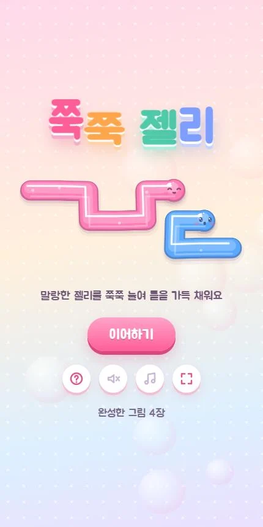
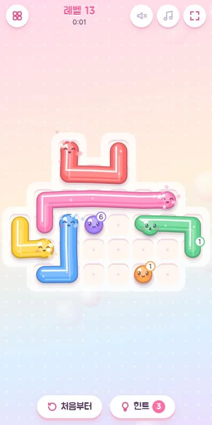
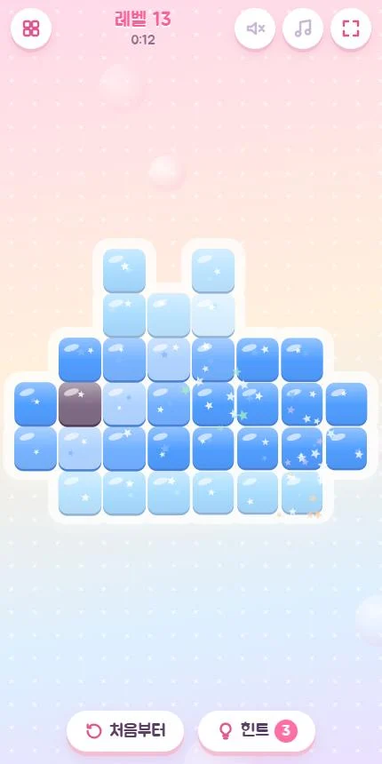
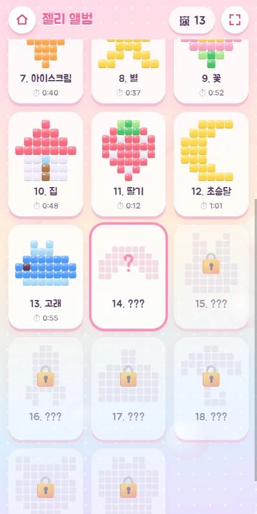

🧩 퍼즐 게임 · 무료 · 설치 없음
쭉쭉 젤리
“젤리를 쭉쭉 늘여 그림 틀을 가득!”
- 한 그림 1~3분
- 그림 20장 모으기
- 막히면 힌트
- 기록 자동 저장
회원가입 없이 누르면 바로 시작돼요
어떤 게임인가요?
판 위에 그림 모양의 젤리 틀이 있고, 숫자가 붙은 말랑한 젤리들이 군데군데 놓여 있어요. 젤리를 꾹 눌러 끌면 엿가락처럼 쭉 늘어나고, 젤리 얼굴이 손끝을 따라와요.
틀을 빈칸 없이 다 채우면 젤리들이 하트, 고양이, 고래, 판다 같은 픽셀 그림으로 차르르 바뀌어요. 완성한 그림은 젤리 앨범에 한 장씩 모여요.
젤리가 한 칸 늘어날 때마다 맑은 음이 하나씩 올라가서, 끌기만 해도 작은 멜로디가 돼요. 그림이 나타날 때는 종소리가 이어지고 잔잔한 오르골 배경음이 깔려요.
이렇게 해요
- STEP 1
젤리를 꾹 눌러 끌어요
젤리를 누른 채 손가락을 움직이면 그 길을 따라 젤리가 쭉 늘어나요. 꺾어서 돌아가도 돼요.
- STEP 2
숫자만큼 늘어나요
젤리 옆 숫자는 앞으로 더 늘어날 수 있는 칸 수예요. 끝까지 늘어나면 젤리가 활짝 웃어요.
- STEP 3
틀을 가득 채워요
모든 칸을 빈틈없이 채우면 성공! 젤리가 그림으로 바뀌고 앨범에 모여요.



🌟 이런 것도 있어요
- 늘어난 젤리를 다시 누르면 그 자리까지 쏙 줄어들어요
- 막히면 힌트: 처음 3개, 그림 세 장을 새로 완성할 때마다 하나씩 늘어요
- 그림마다 가장 빠른 완성 기록이 남아요
- 20장을 다 모으면 더 긴 젤리가 나오는 ★ 단계가 이어져요
그림이 커질수록 젤리도 길어져서 점점 어려워져요.
이런 분께 추천해요
- 짧게 한 판씩 머리를 식히고 싶은 분
- 그림이 완성되는 순간을 좋아하는 분
- 가족이 돌아가며 그림 앨범을 채워 보고 싶은 분
구석이나 한 칸짜리 좁은 길부터 채우면 쉬워요. 길이 막히면 늘어난 젤리를 다시 눌러 줄이고 다른 길로 돌아가 보세요.
📱 어떤 기기에서 하면 좋을까요?
- 가장 좋아요휴대폰 세로 화면
손가락으로 끌기만 하면 돼요. 시작하기를 누르면 전체 화면으로 바뀌어요.
- 가장 좋아요태블릿 가로·세로 모두
판이 크게 보여서 큰 그림도 편하게 채울 수 있어요.
- 좋아요컴퓨터·노트북 마우스
마우스를 누른 채 끌면 젤리가 늘어나요.
오른쪽 위 메뉴(⋮ 또는 ···)에서 「다른 브라우저로 열기」를 눌러 크롬이나 사파리로 열어 주세요. 앱 안에서는 전체 화면이 안 되고 저장이 풀릴 수 있어요.
🍎 아이폰·아이패드에서는
- ① 사파리로 열기
카카오톡이나 네이버 앱 안에서는 화면이 좁아요. 「다른 브라우저로 열기」나 사파리로 열어 주세요.
- ② 홈 화면에 추가하기
아이폰은 전체 화면 버튼이 동작하지 않아요. 공유 버튼(□↑) → 「홈 화면에 추가」로 열면 주소창 없이 꽉 찬 화면이 돼요. 아이패드는 시작하기를 누르면 전체 화면이 돼요.
- ③ 소리
무음 스위치가 켜져 있으면 소리가 나지 않아요. 효과음과 오르골 배경음은 화면의 버튼으로 따로 켜고 끌 수 있어요.
🤖 갤럭시 등 안드로이드에서는
크롬이나 삼성 인터넷으로 열고 시작하기를 누르면 전체 화면으로 바뀌어요. 젤리가 늘어날 때 짧게 진동해요.
▶ 바로 해 보기
설치도, 회원가입도 필요 없어요.
쭉쭉 젤리 시작하기game.edoori.co.kr/jjukjelly/